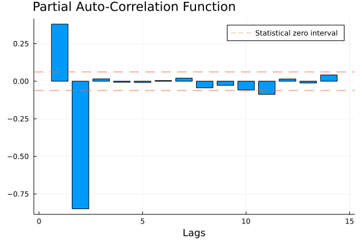
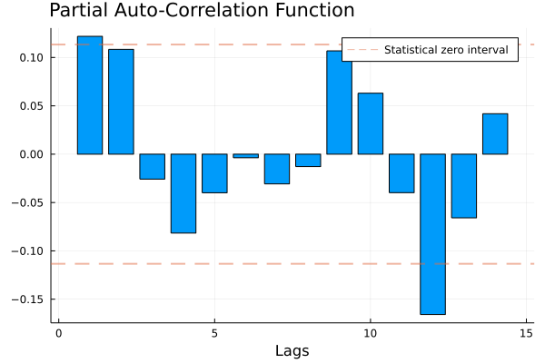
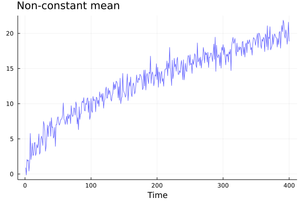
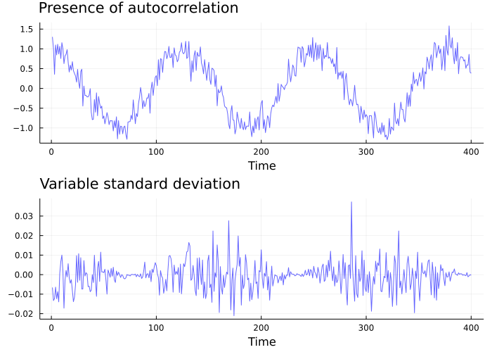
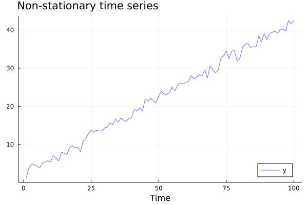
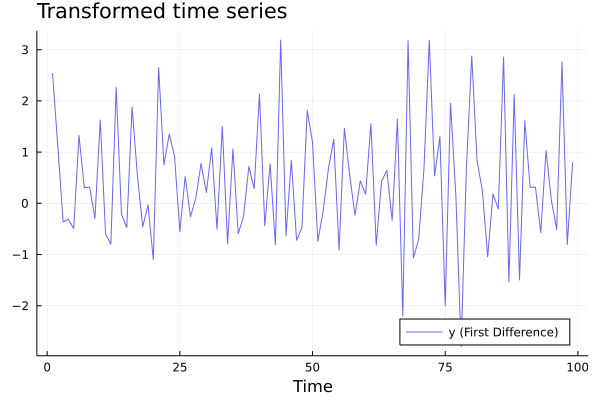
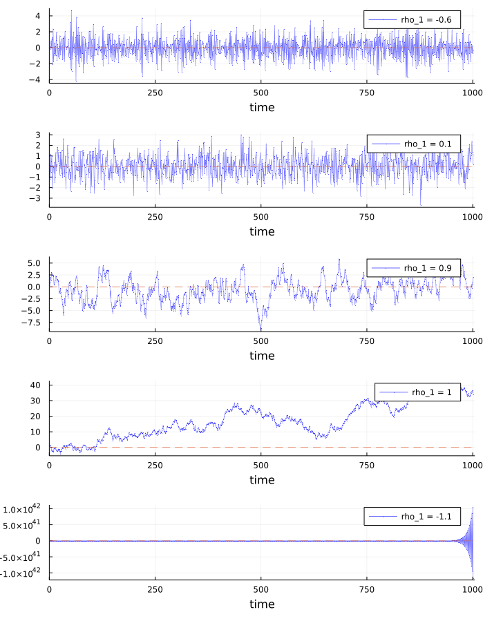
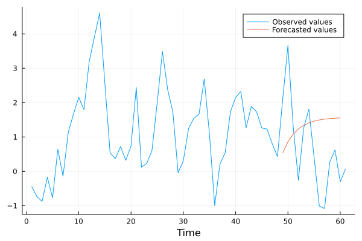

Topic 3 1) INTRODUCTION
3.1 Time series
One of the main problems in statistics in general is that of building good models from observed data. But when we deal with time series this is particularly challenging for two main reasons. First of all, we typically have only a single historical sample available, unlike other kinds of statistical analysis where it’s usually possible to build a larger sample (if you dispose of the necessary time and money to collect new data). Furthermore, a time series can in theory have an infinite time domain, but in practice we always dispose only of a finite number of observations. Therefore, since in most cases we have to deal with a sample size of \(n=1\) (we observe one unit over time) and an uncomplete series, building probabilistic models is particularly challenging. This has required the development of specific techniques, giving Time series analysis the status of autonomous discipline inside the broader field of econometrics.
A time series is a sequence of observations \(y_1, y_2, ... , y_T\) indexed in time order, each being recorded at a specific time \(\text{t}\). Most commonly, these are taken at successively equally spaced points in time. When this is the case, we speak of a discrete-time series. A series is said instead continuous when the observations are recorded continuously over some time interval.
The objectives of Time series analysis are diverse and depend on the specific application, but they are all based on the idea that a time series is a realization from a sequence of random variables or a stochastic process \(\{Y_t\}_{t=1}^T\). Therefore, a fundamental task is that of shedding light on the probability laws that govern the observed process. These laws can be used to:
- understand what are the factors that drive the dynamics of the series, that is, the underlying causal relationships;
- forecast future values of the variable;
Often, these goals are relevant also to understand how a variable might respond to interventions.
To illustrate the concepts that will be presented we will use the United States GDP series as example:
#import Pkg; Pkg.add("FredData");
using FredData;
api_key = "insert_your_api_key_here" # an api key can be requested at https://research.stlouisfed.org/docs/api/api_key.html
f = Fred(api_key)gdp = get_data(f, "GDPC1"; frequency="q")## FredSeries
## id: GDPC1
## title: Real Gross Domestic Product
## units: Billions of Chained 2012 Dollars
## seas_adj (native): Seasonally Adjusted Annual Rate
## freq (native): Quarterly
## realtime_start: 2022-03-14
## realtime_end: 2022-03-14
## last_updated: 2022-02-24T13:57:02
## notes: BEA Account Code: A191RX Real gross domestic product is the inflation adjusted value of the goods and services produced by labor and property located in the United States.For more information see the Guide to the National Income and Product Accounts of the United States (NIPA). For more information, please visit the Bureau of Economic Analysis (http://www.bea.gov/national/pdf/nipaguid.pdf).
## trans_short: lin
## data: 300x4 DataFrame with columns ["realtime_start", "realtime_end", "date", "value"]gdp## FredSeries
## id: GDPC1
## title: Real Gross Domestic Product
## units: Billions of Chained 2012 Dollars
## seas_adj (native): Seasonally Adjusted Annual Rate
## freq (native): Quarterly
## realtime_start: 2022-03-14
## realtime_end: 2022-03-14
## last_updated: 2022-02-24T13:57:02
## notes: BEA Account Code: A191RX Real gross domestic product is the inflation adjusted value of the goods and services produced by labor and property located in the United States.For more information see the Guide to the National Income and Product Accounts of the United States (NIPA). For more information, please visit the Bureau of Economic Analysis (http://www.bea.gov/national/pdf/nipaguid.pdf).
## trans_short: lin
## data: 300x4 DataFrame with columns ["realtime_start", "realtime_end", "date", "value"]gdp.data## 300×4 DataFrame
## Row │ realtime_start realtime_end date value
## │ Date Date Date Float64
## ─────┼────────────────────────────────────────────────────
## 1 │ 2022-03-14 2022-03-14 1947-01-01 2034.45
## 2 │ 2022-03-14 2022-03-14 1947-04-01 2029.02
## 3 │ 2022-03-14 2022-03-14 1947-07-01 2024.83
## 4 │ 2022-03-14 2022-03-14 1947-10-01 2056.51
## 5 │ 2022-03-14 2022-03-14 1948-01-01 2087.44
## 6 │ 2022-03-14 2022-03-14 1948-04-01 2121.9
## 7 │ 2022-03-14 2022-03-14 1948-07-01 2134.06
## 8 │ 2022-03-14 2022-03-14 1948-10-01 2136.44
## ⋮ │ ⋮ ⋮ ⋮ ⋮
## 294 │ 2022-03-14 2022-03-14 2020-04-01 17258.2
## 295 │ 2022-03-14 2022-03-14 2020-07-01 18560.8
## 296 │ 2022-03-14 2022-03-14 2020-10-01 18767.8
## 297 │ 2022-03-14 2022-03-14 2021-01-01 19055.7
## 298 │ 2022-03-14 2022-03-14 2021-04-01 19368.3
## 299 │ 2022-03-14 2022-03-14 2021-07-01 19478.9
## 300 │ 2022-03-14 2022-03-14 2021-10-01 19810.6
## 285 rows omittedAfter retrieving the data, we apply a log-diff transformation in order to obtain the GDP growth rate and make the series stationary.
gdp.data[!, :DY] .= (log.(gdp.data[!,:value]) .- (lag(log.(gdp.data[!,:value]))))*100*4## 300-element Array{Union{Missing, Float64},1}:
## missing
## -1.0682491336140743
## -0.8268669483840085
## 6.208670758248047
## 5.971997656168071
## 6.5488198105281725
## 2.285180753050753
## 0.4465992236315941
## -5.550113185352146
## -1.366736020904824
## ⋮
## 1.872003136580247
## -5.248615823764169
## -37.4485448690848
## 29.10509860403465
## 4.4364136487708095
## 6.088977887356606
## 6.509726950140049
## 2.2772975175371357
## 6.7537062061070685GDP = gdp.data[!, :DY][2:end];To start understanding the basic features of a specific time series we can use some descriptive statistics.
The sample mean is the average value of the observations in the observed time series:
\[ \bar{y} = \frac{1}{T}(y_1 + y_2 + ... + y_T) = \frac{1}{T} \sum^T_{t=1} y_t \] The sample variance is a measure of the quadratic deviation of the observations from the sample mean:
\[ \text{Var}[y_t]=\frac{\sum^T_{t=1}(\bar{y_t} - y_t)^2}{T} \] The higher the variance, the higher the variability of the observations with respect to the average value.
A more specific statistic to time series analysis is the autocorrelation or serial correlation function, which measures how strongly a series is related to it’s lagged version. The number of lags is usually indicated with \(j\).
\[ \widehat{\rho}(j) = \frac{\widehat{\text{Cov}}[y_t, y_{t-j}]}{\widehat{\text{Var}}[y_t]} \] where \(\widehat{\text{Cov}}[y_t, y_{t-j}]\) is the autocovariance function:
\[ \widehat{\text{Cov}}[y_t, y_{t-j}] = \frac{1}{T-j} \sum_{t=j+1}^{T}(y_t - \bar{y})(y_{t-j} - \bar{y}) \] Note that \(\widehat{\text{Var}}[y_t] = \widehat{\text{Cov}}[y_t, y_t]\).
When the values of \(y\) at time \(t\) and \(t-j\) are both above or below the average value, then \((y_t - \bar{y})\) and \((y_{t-j} - \bar{y})\) have the same sign and \((y_t - \bar{y})(y_{t-j} - \bar{y}) > 0\). If this happens for most observations, the series shows a positive autocovariance, \(\widehat{\text{Cov}}[y_t, y_{t-j}]>0\).
On the contrary, when \(y_t\) is above the average value and \(y_{t-j}\) below (or vice-versa), then \((y_t - \bar{y})\) and \((y_{t-j} - \bar{y})\) have opposite signs and we have \((y_t - \bar{y})(y_{t-j} - \bar{y}) < 0\). If this happens for most observations, the series shows a negative autocovariance, \(\widehat{\text{Cov}}[y_t, y_{t-j}] < 0\).
If there is not a systematic pattern between the observations in the time series and their lagged values, then the sample covariance will be approximately zero.
function samplemean(Y::Array)
T = length(Y)
mean = sum(Y)/T
return mean
end## samplemean (generic function with 1 method)
function autocov(Y::Array, lag::Int64)
T = length(Y)
lag1(x; j = 1) = vcat([NaN for i in 1:j], x[1:end-j])
Ybar = samplemean(Y)
DeltaY = Y .- Ybar
DeltaY_lag = lag1(DeltaY, j=lag)
p = DeltaY .* DeltaY_lag
autocovariance = sum(p[lag+1:end])/(T-lag)
return autocovariance
end## autocov (generic function with 1 method)
function ACF(Y::Array, lag::Int64)
autocov(Y,lag)/autocov(Y,0)
end## ACF (generic function with 1 method)
function ACF_plot(Y::Array; lags = 14)
T = length(Y)
ACF_vector = [ACF(Y, k) for k in 1:lags]
bar(ACF_vector, legend=:topright, xlabel="Lags", title = "Auto-Correlation Function", titlelocation = :left, label = "")
zero_pivot = 1.96/sqrt(T)
plot!(seriestype=:hline, [-zero_pivot, +zero_pivot], linestyle=:dash, alpha=0.5, lw=2, label="Statistical zero interval")
end## ACF_plot (generic function with 1 method)#examples
x = randn(1000)## 1000-element Array{Float64,1}:
## -1.3282492903607437
## -2.497940648223036
## -1.251226275760945
## 0.41918015937867464
## 1.6166323569109695
## 0.9194480235528626
## -0.051993951569121996
## -0.05712375974134611
## 0.7883492213412536
## -0.06246460474247946
## ⋮
## 0.47942643027433396
## -1.8169862960780259
## -0.3406838059581287
## 0.3213388873851518
## -0.40653702529642616
## -1.2090877921167453
## 0.7410418496365535
## -0.18618071522630544
## 1.2247231879020968samplemean(x)## 0.030202118444615348autocov(x,11)## -0.017844287123130225ACF(x, 7)## -0.025580198108004326ACF_plot(x)Instead of using simulated data, we can look at these summary statistics for the GDP series:
samplemean(GDP)## 3.0448029732505866ACF_plot(GDP)These simple statistics give us some insights about the GDP-growth time series. The sample mean is 2.92, meaning that the average GDP growth in the considered period (1947:Q1 - 2020:Q2) has been 2.92%. The ACF plot shows that the series is positively correlated with its own first two lags. This means that today’s GDP tends to have the same sign of last quarter’s and last semester’s GDP.
3.2 ACF and PACF
The Auto-Correlation Function (ACF) is a very useful statistic in time series analysis. It measures how much the time series is correlated with its own lagged values, that is, how much the present values of the series moves together with its past values. For example, consider the price of some good. It seems reasonable to think that today’s price \(P_t\) is some way related to the price of one month, one quarter or one year ago: \(P_{t-1}, P_{t-3}, P_{t-12}\). This is an important idea in time series: past observations can embed systematic information about the future realizations of the same process.
However, the ACF measures how much lagged values of a series affect successive values both directly and indirectly. That is, it measures how much today’s price is affected by the price of two months ago via the effect on last month’s price as well as the direct effect of the price of two months ago. To be more precise, it doesn’t disentangle between the two relationships \(P_{\text{Jan}} \rightarrow P_{\text{Mar}}\) and $P_{} P_{} P_{} $. Nonetheless, it’s often interesting to capture only the direct effect. Consider the case of a fair coming to town every two months, which causes the supply and possibly the demand of a given good to change. In this case, there is a direct relationship \(P_{\text{Jan}} \rightarrow P_{\text{Mar}}\), which embeds the information about this event, and \(P_{t-2}\) might be a good predictor of \(P_t\).
To detect these direct effects, we can use the Partial Auto-Correlation Function (PACF). The idea here is to get rid of all the indirect effects and isolate the direct impact that a past value has on the present. To do that, we just need to estimate a simple linear regression of the series on its lagged varsions:
\[ P_t = \beta_0 + \beta_1 P_{t-1} + \beta_2 P_{t-2} + \varepsilon_t \] From basic linear regression analysis, we know that \(\beta_2\) isolates only the direct effect of the second lag. Therefore, the PACF between the series \(P_t\) and its second lag \(P_{t-2}\) is exactly the coefficient of the regression, \(\beta_2\), which can be estimated with OLS as \(\hat{\beta}_{OLS}\) Let’s see this in practice.
## PACF
## Simulated data generating process
β₀ = 50.0 ## 50.0β₁ = 0.7 ## 0.7β₂ = -0.85 ## -0.85P₀ = 50.0 ## 50.0P₁ = 50.5 ## 50.5T = 1000## 1000P = vcat(P₀, P₁, zeros(T))## 1002-element Array{Float64,1}:
## 50.0
## 50.5
## 0.0
## 0.0
## 0.0
## 0.0
## 0.0
## 0.0
## 0.0
## 0.0
## ⋮
## 0.0
## 0.0
## 0.0
## 0.0
## 0.0
## 0.0
## 0.0
## 0.0
## 0.0for t in 3:length(P)
P[t] = β₀ + β₁*P[t-1] + β₂*P[t-2] + randn()
end
## Generated time series
plot(P,color=:blue, lw=1, alpha=0.6, label="Price",
legend=:topright, xlabel="Months")
## OLS estimation of the PACF
## 1) Building the regressors matrix
P_1 = lag(P, 1) # First lag## 1002-element ShiftedArray{Float64,Missing,1,Array{Float64,1}}:
## missing
## 50.0
## 50.5
## 43.343859591067066
## 38.573971752637696
## 38.357982113711685
## 45.25963106318629
## 49.35564973272747
## 45.99180726650679
## 40.32790858960627
## ⋮
## 41.12447198907154
## 43.01415745494858
## 44.9661397320071
## 44.98395372515109
## 44.354727112647836
## 42.42935725917388
## 42.832300834862366
## 43.857059973542015
## 43.934398584446605P_2 = lag(P, 2) # Second lag## 1002-element ShiftedArray{Float64,Missing,1,Array{Float64,1}}:
## missing
## missing
## 50.0
## 50.5
## 43.343859591067066
## 38.573971752637696
## 38.357982113711685
## 45.25963106318629
## 49.35564973272747
## 45.99180726650679
## ⋮
## 42.06268881942177
## 41.12447198907154
## 43.01415745494858
## 44.9661397320071
## 44.98395372515109
## 44.354727112647836
## 42.42935725917388
## 42.832300834862366
## 43.857059973542015constant = [1 for t in 1:length(P_2[3:end])] # Intercept## 1000-element Array{Int64,1}:
## 1
## 1
## 1
## 1
## 1
## 1
## 1
## 1
## 1
## 1
## ⋮
## 1
## 1
## 1
## 1
## 1
## 1
## 1
## 1
## 1X = hcat(constant, P_1[3:end], P_2[3:end]) # Regressors' matrix## 1000×3 Array{Union{Missing, Float64},2}:
## 1.0 50.5 50.0
## 1.0 43.3439 50.5
## 1.0 38.574 43.3439
## 1.0 38.358 38.574
## 1.0 45.2596 38.358
## 1.0 49.3556 45.2596
## 1.0 45.9918 49.3556
## 1.0 40.3279 45.9918
## 1.0 39.1466 40.3279
## 1.0 43.3237 39.1466
## ⋮
## 1.0 41.1245 42.0627
## 1.0 43.0142 41.1245
## 1.0 44.9661 43.0142
## 1.0 44.984 44.9661
## 1.0 44.3547 44.984
## 1.0 42.4294 44.3547
## 1.0 42.8323 42.4294
## 1.0 43.8571 42.8323
## 1.0 43.9344 43.8571
y = P[3:end] # Dependent variable## 1000-element Array{Float64,1}:
## 43.343859591067066
## 38.573971752637696
## 38.357982113711685
## 45.25963106318629
## 49.35564973272747
## 45.99180726650679
## 40.32790858960627
## 39.1466396001903
## 43.32367364858808
## 44.792379321736455
## ⋮
## 43.01415745494858
## 44.9661397320071
## 44.98395372515109
## 44.354727112647836
## 42.42935725917388
## 42.832300834862366
## 43.857059973542015
## 43.934398584446605
## 45.9029654339445
## 2) Formula of the OLS estimator. The result is a 3-elements Array [β₀, β₁, β₂]
β_hat = (X'*X) \ X'*y## 3-element Array{Float64,1}:
## 50.19365213568193
## 0.669932835616178
## -0.8253606643581378
## PACF for the second lag
β₂_hat = β_hat[3]## -0.8253606643581378Note that in the previous code we introduced the lag operator (L), a useful device that has any applications in Time series. This is a function that maps every value of the time series in its previous values: $L Y_t = Y_{t-1}, $ \(L^2 Y_{t} = Y_{t-2},\) \(\ L^3 Y_{t} = Y_{t-3},...\)
The PACF plot is a useful device:
## PACF PLOT
function PACF_plot(Y::Array; lags = 14)
PACF_vector = zeros(lags)
T = length(Y)
lag(x; j = 1) = vcat([NaN for i in 1:j], x[1:end-j])
for i in 1:lags
constant = [1 for t in 1:T-i]
regressors = hcat([lag(Y, j = h) for h in 1:i ]...)[i+1:end, :]
X = hcat(constant, regressors)
y = Y[i+1:end]
β_hat = X\y # Shortcut for β_hat = (X'*X) \ X'*y
PACF = β_hat[i+1]
PACF_vector[i] = PACF
end
bar(PACF_vector, legend=:topright, xlabel="Lags", label = "", title = "Partial Auto-Correlation Function", titlelocation = :left)
zero_pivot = 1.96/sqrt(T)
plot!(seriestype=:hline, [-zero_pivot, +zero_pivot], linestyle=:dash, alpha=0.5, lw=2, label="Statistical zero interval")
end## PACF_plot (generic function with 1 method)PACF_plot(P)As we can see from the plot, only the first two lags are significantly affecting the present price. Indeed, the other estimated prtial autocorrelations are not statistically different from zero: we have no evidence that prices from 3,6,12… months ago affect new prices. Since in this “artificial” example we know the true data generating process (as we built the series) we can see that the estimates reflect pretty well the true relationships between the variables and that the PACF plot shows clearly that only the two first lags are involved in price formation. We will get back on this when discussing auto-regressive \(AR(p)\) models.
Let’s apply this function to the GDP series:
PACF_plot(GDP)This suggests that the first lag might be a good predictor of the GDP series.
3.3 Stationarity
Even when focusing on models which postulate simple relationships involving only first order and second-order moments, it is necessary to assume that some features of the probability law underlying the model are stable over time. This is because if the moments of the process change arbitrarily, it can be difficult to forecast future values of the series, since this would mean that the data referring to different points in time in our sample are realizations of random variables that can differ substantially.
Stationarity is an assumption about the stability of the properties of the stochastic process. The simplest type of stationarity is weak stationarity, also called covariance stationarity.
Definition (Weak stationarity): A time series \(Y_1, Y_2, Y_3, \dots\) is stationary if \(E[Y_t^2] < \infty\), for each \(t\), and
The expected value of any observation is constant and does not change over time:
\(E[Y_t] = \mu\).
The autocovariance is constant, given the number of lags. That is, the autocovariance is independent of \(t\):
$(h) = (Y_t, Y_{t+h}) = (Y_{t+k}, Y_{t+k+h}) $, \(\forall k \in \mathbb{Z}\).
A first practical way to check for stationarity is to look at the plot of the time series. Let’s have a look of a counter-example with non-constant mean.
## Non-stationary time series
ns2 = [sqrt(i) + randn() for i in 1:400]## 400-element Array{Float64,1}:
## 0.9563376717194986
## 0.9978542034718006
## 2.090338206636745
## 3.3595930848103936
## 1.0572029460547663
## 1.671892941513387
## 1.729586411662353
## 1.3484336589011021
## 2.570322100682133
## 1.362575064334508
## ⋮
## 19.40429114481385
## 19.63357993884739
## 21.07759846376899
## 20.222367032062426
## 19.230770580716143
## 20.37539584957533
## 20.15399655238276
## 20.05671689504453
## 22.11890040162605plot(ns2, color=:blue, lw=1, alpha=0.6, label="", legend=:bottomright, xlabel="Time", title="Non-constant mean", titlelocation = :left)
The GDP series in levels is also non-stationary:
plot(gdp.data.date, gdp.data[:, :value], label="", xlabel="Time", ylabel="GDP (Billion USD)", legend = :bottomright, ylim = (0, 20000), yformatter = :plain)
Covariance stationarity assumes that only the first two moments of the time series are time-invariant. This assumption is crucial for linear time series, such as ARMA processes. Stricter concepts of stationarity impose time-invariant conditions on the joint distribution of series. Such conditions may be required when dealing with non-linear relationships among variables at different times, which go beyond the scope of this course.
If the time series \(Y_1, Y_2, \dots\) is weakly stationary, we can write \(\gamma_t(h) = \gamma(h)\) and the autocorrelation function becomes
\[ \rho(h) = \frac{\gamma(h)}{\gamma(0)} \]
3.4 An important stationary series: the white noise process
Definition (White Noise): A process \(\varepsilon_1, \varepsilon_2, \varepsilon_3,\dots\) is called white noise if it has mean zero, constant variance and it is not autocorrelated:
\(E[\varepsilon_t] = 0\);
$(h) = \[\begin{cases} \sigma^2 &\text{for} \ h=0 \\ 0 \quad &\text{for} \ h>0 \\ \end{cases}\]$
Let’s have a look at a couple of counter-examples:
## Not white-noise
nw1 = [cos(t/20) + randn()/5 for t in 1:400]## 400-element Array{Float64,1}:
## 0.9751816566017188
## 1.1274344067849085
## 1.067283671036093
## 0.6390930690741872
## 0.39238048286547134
## 0.9107613798039376
## 0.6300275957061304
## 0.6885356730435734
## 1.2150442669555306
## 1.151244782204023
## ⋮
## 0.681745938433814
## 0.7836081146551374
## 1.0316507163818498
## 0.8569392554913702
## 0.44350859418586447
## 0.491609532071067
## 0.3519971377172054
## 0.6520006313508571
## 0.33083770590775086nw1_plot = plot(nw1, color=:blue, lw=1, alpha=0.6, title="Presence of autocorrelation", titlelocation = :left, label="", xlabel="Time")
nw2 = [cos(t/50) * randn()/100 for t in 1:400]## 400-element Array{Float64,1}:
## -0.000521228237992072
## 0.002449686696230194
## 0.004759196502833366
## 0.020273796366459568
## 0.008668846588963528
## -0.005633209832233676
## 0.013169270657996906
## 0.0013802452446186819
## -0.005035316596303054
## 0.020930842298047588
## ⋮
## 8.642908790551577e-5
## -8.715853730788945e-5
## 0.00010364013289527115
## -0.00025660049158589027
## -0.000441989027463566
## -0.0004202880895159344
## -0.0010411484294796146
## -0.0014978907537675677
## 0.0010176809746085924nw2_plot = plot(nw2, color=:blue, lw=1, alpha=0.6, title="Variable standard deviation", titlelocation = :left, label="", xlabel="Time")
plot(nw1_plot, nw2_plot, layout=(2,1), size=(700,500))These series cannot be white noises because they show a clear pattern over time, either in terms of autocorrelation or standard deviation. This roughly means that there is some information in the data that could be modelled to grasp the regularities of the process. For instance, in the first example, the value of the series at one point in time gives us a good idea of what the value will be in the subsequent period, which is not the case when dealing with white noises.
Indeed, the most important property of the white noise is that it is not predictable. This is a main feature, which allows us to consider a white noise time series as a sort of yardstick for our analysis. Most often, in Time series econometrics we treat series as composed by a predictable signal and a noise. If we manage to build a model that captures almost all the signal and all we are left with is just an unpredictable white noise, then our model is likely to be fitting the data well, in the sense that it efficiently uses all the available information.
3.5 Making a time series stationary
In many cases, it is possible to reduce a non-stationary series to a stationary one by applying some simple transformations.
For instance, consider the following data generating process: \(y_t = \beta_0 + \beta_1 t + \varepsilon_t\).
The series is clearly non-stationary, as we can deduce by the increasing trend shown in the plot:
β₀ = 2## 2β₁ = 0.4## 0.4y = [β₀ + β₁*t + randn() for t in 1:100]## 100-element Array{Float64,1}:
## 1.9350449992287078
## 2.358204491339265
## 3.655998733257418
## 3.953213609550345
## 3.7799807569344472
## 5.003007790586266
## 3.8029910342285596
## 3.3019513153015483
## 5.948250887433588
## 4.894834274662123
## ⋮
## 36.52043415668851
## 38.5937314230643
## 38.65435255049186
## 38.6673669928395
## 38.47338141023757
## 40.88228587165064
## 40.96366019222203
## 41.787917870236925
## 41.28772606127653plot(y, color=:blue, lw=1, alpha=0.6, label = "y", legend = :bottomright, xlabel="Time", title="Non-stationary time series", titlelocation=:left)A strategy here is to apply a first-difference transformation. Let \(\Delta y_t = y_t - y_{t-1}\). By substituting the expressions for \(y_t\), we can write
\(\Delta y_t = (\beta_0 + \beta_1 t + \varepsilon_t) - (\beta_0 + \beta_1 (t-1) + \varepsilon_{t-1}) = \beta_1 + \varepsilon_{t} - \varepsilon_{t-1}\)
which has indeed constant mean: \(E[\Delta y_t] = E[\beta_1 + \varepsilon_{t} - \varepsilon_{t-1}] = \beta_1\).
Δy = y.-lag(y)## 100-element Array{Union{Missing, Float64},1}:
## missing
## 0.42315949211055726
## 1.2977942419181532
## 0.297214876292927
## -0.17323285261589794
## 1.2230270336518188
## -1.2000167563577064
## -0.5010397189270113
## 2.6462995721320395
## -1.053416612771465
## ⋮
## -2.258301676456938
## 2.073297266375789
## 0.06062112742755943
## 0.013014442347639488
## -0.19398558260192544
## 2.4089044614130657
## 0.08137432057139193
## 0.8242576780148951
## -0.5001918089603947plot(Δy[2:end],color=:blue, lw=1, alpha=0.6, label = "y (First Difference)", legend = :bottomright,xlabel="Time", title = "Transformed time series", titlelocation = :left)
Making a series stationary before proceding with further analysis is good practice since it’s a substantive assumption upon which many models are based on.
For the GDP series a convenient transformation is log-difference, which not only makes the series stationary, but also allows to interpret the resulting variable as GDP growth. We already applied this transformation in the introductory paragraph since ACF and PACF are meaningful only when applied to stationary series.
plot(gdp.data.date[2:end], GDP, label="", xlabel="Time", ylabel="GDP growth (%)", legend = :topright)
3.6 Wold representation
It’s worth mentioning a very important result in time series, the Wold’s decomposition theorem, which states that every covariance stationary process (with mean zero) can be written as an infinite sum of current and past white noise terms with weights that are independent of \(\text{t}\).
The basic intuition of the Wold’s decomposition theorem is that if a series is covariance stationary, we can always think of its every new observation as influenced by past white noise shocks and a current shock; and the magnitude of this effects dependent on the lag between each shock and the observation, as expressed by the coefficient \(\psi_j\).
$$ \[\begin{aligned} Y_t &= \sum_{j=0}^\infty \psi_j \varepsilon_{t-j} + \eta_t \\ \end{aligned}\]$$ That is, the process can be represented by a system of the following kind:
$$
\[\begin{cases} Y_1 = \psi_0 \varepsilon_1\\ Y_2 = \psi_0\varepsilon_2 + \psi_1 \varepsilon_1 \\ Y_3 = \psi_0\varepsilon_3 + \psi_1 \varepsilon_2 + \psi_2 \varepsilon_1 \\ \vdots \\ Y_t = \psi_0\varepsilon_t + \psi_1 \varepsilon_{t-1} + \psi_2 \varepsilon_{t-2}+\dots+ \psi_{t-1} \varepsilon_2 + \psi_{t} \varepsilon_1 \\ \vdots \end{cases}\]$$ # 2) ARMA
A cornerstone of Time series analysis are\(ARMA\) models, which are a very general class of models used for forcasting time series, and can be written as
\[ Y_t = \rho_0 + \rho_1 Y_{t-1} + \cdots + \rho_p Y_{t-p} + \varepsilon_t + \theta_{1} \varepsilon_{t-1} + \cdots + \theta_{p} \varepsilon_{t-q} \] If we look closely at the above equation, we can see that it has the typical structure of a regression model in which the regressors are of two different kinds: we have lagged versions of the response variable along with lagged values of a white noise shock. Indeed, this is because \(ARMA\) models are nothing but the combination of two simpler classes of models.
The first is that of “Auto-Regressive” or \(AR(p)\) models, where the response at time \(\text{t}\) is modelled as a linear function of its \(p\) previous values. It takes the form:
\[ Y_t = \rho_0 + \rho_1 Y_{t-1} + \cdots + \rho_p Y_{t-p} + \varepsilon_t \] The basic idea behind these models is that if the series exhibits some kind of repeated pattern over time, then looking at its past values might be a good way to extract information on the behaviour of the series and eventually be able to predict new observations.
The second class is that of “Moving-Average” or \(MA(q)\) models, where the response at time \(t\) is modelled as a linear combination of \(q\) lagged versions of a white noise process. These models are of the form:
\[ Y_t = \mu + \theta_{1} \varepsilon_{t-1} + \cdots + \theta_{p} \varepsilon_{t-q} + \varepsilon_t \] Here, the main idea is that when the values that a series takes on fluctuate around a constant mean \((\mu)\), a good way to start the prediction is just by using the mean of the series and adjusting it with the information coming from past prediction errors.
So, by combining these models we obtain \(ARMA(p,q)\) models, where the \(p\) and \(q\) refer to the number of auto- regressive and moving average components included. We will look at some of these models in further detail.
3.7 AR(1)
The \(AR(1)\) is perhaps the simplest model in Time series analysis. The response is represented as a linear function of it’s first lag and sometimes an intercept is also included:
\[ Y_t = \rho_0 + \rho_1 Y_{t-1} + \varepsilon_t \] The first important question we need to ask is under what conditions this process is stationary, and it turns out that it is the case only if \(|\rho_1| <1\). The intuition is that if this were not the case, every new observation of \(Y\) would have a value that is further away from the intercept than it’s previous value. Therefore, the process would not satisfy the first condition that we gave for stationarity, since it’s expected value would not be constant. Indeed we have:
\[ E[Y_t]=E[\rho_0 + \rho_1 Y_{t-1} + \varepsilon_t]= \rho_0 + \rho_1E[Y_{t-1}] \] noting that \(Y_{t-1} = \rho_0 + \rho_1 Y_{t-2} + \varepsilon_{t-1}\) and that it holds for every \(t\), we can write
$$ \[\begin{aligned} E[Y_t] &= \rho_0 + \rho_1E[\rho_0 + \rho_1 Y_{t-2} + \varepsilon_{t-1}] = \rho_0(1+\rho_1) +\rho_1^2E[Y_{t-2}] = \\ & = \rho_0(1+\rho_1 + \rho_1^2) +\rho_1^3 E[Y_{t-3}] = \dots = \rho_0 \sum_{t=0}^\infty \rho_1^t + \lim_{t\to \infty}\rho_1^t E[Y_0] \end{aligned}\]$$ which converges if and only if \(|\rho_1| <1\). In that case, by the properties of the geometric series, we get \(E[Y_t]=\frac{\rho_0}{1-\rho_1}\).
We can check by looking at some graphs of simulated \(AR(1)\)s that only when \(|\rho_1| <1\) the process is stationary.
## Picture of simulated AR(1) for different values of rho
plots = [plot() for i in 1:5]## 5-element Array{Plots.Plot{Plots.GRBackend},1}:
## Plot{Plots.GRBackend() n=0}
## Plot{Plots.GRBackend() n=0}
## Plot{Plots.GRBackend() n=0}
## Plot{Plots.GRBackend() n=0}
## Plot{Plots.GRBackend() n=0}
ρ₀ = 0.0## 0.0Y₀ = 0.1## 0.1for (i, ρ₁) in enumerate((-0.6, 0.1, 0.9, 1, -1.1))
Y = zeros(1001)
Y[1] = Y₀
for k in 1:length(Y)-1
Y[k+1] = ρ₀ + ρ₁*Y[k] + randn()
end
label = "rho_1 = $ρ₁"
plot!(plots[i], Y, color=:blue, lw=0.5, marker=:circle,markersize=0.0,alpha=0.6, label=label)
plot!(plots[i], legend=:topright, xlabel="time", xlim=(0,1005))
plot!(plots[i], seriestype=:hline, [0], linestyle=:dash, alpha=0.7, lw=1, label="")
end
plot(plots..., layout=(5,1), size=(700,900))
It can be shown that the autocovariance function of an \(AR(1)\) process is expressed by
\[ \gamma(h) = \rho_1^h \frac{\sigma^2}{1-\rho_1^2}, \quad h=0,1,2,\dots \] since this expression depends only on the number of lags \(h\), the second condition for weak stationarity is also satisfied.
# Picture of the autocovariance function for different values of ρ₁
plots = [plot() for i in 1:2]## 2-element Array{Plots.Plot{Plots.GRBackend},1}:
## Plot{Plots.GRBackend() n=0}
## Plot{Plots.GRBackend() n=0}
σ = 1 ## 1for (i, ρ₁) in enumerate((0.75, -0.75))
times = 0:24
acov = [σ * (ρ₁.^k ./ (1 - ρ₁.^2)) for k in times]
label = "rho = $ρ₁"
plot!(plots[i], times, acov, color=:blue, lw=2, marker=:circle,markersize=3,alpha=0.6, label=label)
plot!(plots[i], legend=:topright, xlabel="Time", xlim=(0,25))
plot!(plots[i], seriestype=:hline, [0], linestyle=:dash, alpha=0.5, lw=2, label="")
end
plot(plots..., layout=(2,1), size=(700,500), title="Autocovariance function of an AR(1) process", titlelocation=:left)We know by the Wold’s theorem that when an \(AR(1)\) process is stationary, it can be represented as an infinite sum of white noise shocks:
\[ Y_t = \sum^{\infty}_{j=0}\psi^j \varepsilon_{t-j} \] Indeed, when \(|\rho_1| <1\), we say that the process is invertible and it can be represented as an \(MA(\infty)\). This can be shown by exploiting the properties of geometric series. Indeed, we can use the lag operator to rewrite $Y_t = Y_{t-1} + _t = L Y_t + _t $. We can rearrange the terms to get \(Y_t(1-\rho L) = \varepsilon_t\) and so
\[ Y_t = \frac{\varepsilon_t}{1-\rho L} \] If \(|\rho| <1\), this can be seen as the result of a converging geometric series:
\[ \frac{\varepsilon_t}{1-\rho L}= \varepsilon_t(1+\rho L + \rho^2 L^2 + \rho^3 L^3 + \cdots ) \] Therefore, an AR(1) process can be rewritten as a MA(\(\infty\)):
\[ Y_t = \sum_{q = 0}^\infty \rho^q \varepsilon_{t-q} = \varepsilon_t + \rho \varepsilon_{t-1}+ \rho^2 \varepsilon_{t-2} + \rho^3 \varepsilon_{t-3} + \dots \]
3.7.1 Estimation and prediction
Estimating an \(AR(1)\) is pretty straightforward, as it is simple OLS.
## Simulate an AR data generating process
ρ₀ = 0.5 ## 0.5ρ₁ = 0.7 ## 0.7Y₀ = 0.35 ## 0.35T = 1000## 1000Y = vcat(Y₀, zeros(T))## 1001-element Array{Float64,1}:
## 0.35
## 0.0
## 0.0
## 0.0
## 0.0
## 0.0
## 0.0
## 0.0
## 0.0
## 0.0
## ⋮
## 0.0
## 0.0
## 0.0
## 0.0
## 0.0
## 0.0
## 0.0
## 0.0
## 0.0for t in 2:length(Y)
Y[t] = ρ₀ + ρ₁*Y[t-1] + randn()
end
plot(Y,color=:blue, lw=1, alpha=0.6, xlabel = "Time", label = "")
## Estimate the model
Y_1 = Y[1:end-1] # First lag## 1000-element Array{Float64,1}:
## 0.35
## 0.583191397692973
## 0.9041401575452828
## 2.8643254477130853
## 3.562048845870397
## 2.954618569491293
## 3.4747437622115482
## 3.710448714870844
## 3.8870471318571926
## 1.1094625650421395
## ⋮
## 2.779805560243396
## 4.099547091109328
## 3.34173462849182
## 1.5659183988149712
## 1.7421000095156374
## -0.8928393124345588
## -1.4840404932156894
## 1.1480572712984403
## 0.05380363401302479constant = [1 for t in 1:length(Y_1)] # Intercept## 1000-element Array{Int64,1}:
## 1
## 1
## 1
## 1
## 1
## 1
## 1
## 1
## 1
## 1
## ⋮
## 1
## 1
## 1
## 1
## 1
## 1
## 1
## 1
## 1X = hcat(constant, Y_1) # Regressors' matrix## 1000×2 Array{Float64,2}:
## 1.0 0.35
## 1.0 0.583191
## 1.0 0.90414
## 1.0 2.86433
## 1.0 3.56205
## 1.0 2.95462
## 1.0 3.47474
## 1.0 3.71045
## 1.0 3.88705
## 1.0 1.10946
## ⋮
## 1.0 2.77981
## 1.0 4.09955
## 1.0 3.34173
## 1.0 1.56592
## 1.0 1.7421
## 1.0 -0.892839
## 1.0 -1.48404
## 1.0 1.14806
## 1.0 0.0538036
y = Y[2:end] # Dependent variable## 1000-element Array{Float64,1}:
## 0.583191397692973
## 0.9041401575452828
## 2.8643254477130853
## 3.562048845870397
## 2.954618569491293
## 3.4747437622115482
## 3.710448714870844
## 3.8870471318571926
## 1.1094625650421395
## 2.4406490898418736
## ⋮
## 4.099547091109328
## 3.34173462849182
## 1.5659183988149712
## 1.7421000095156374
## -0.8928393124345588
## -1.4840404932156894
## 1.1480572712984403
## 0.05380363401302479
## 0.5700188163852602
ρ_hat = (X'*X) \ X'*y # Estimated coefficients## 2-element Array{Float64,1}:
## 0.4956312926192597
## 0.7344945992673331## Alternative code: X \ yWe see that these values are close to the true ones. We can use these estimated coefficients to forecast future values of \(Y\):
\[ \hat{Y}_{t+1} = \hat{\rho}_0 + \hat{\rho}_1 Y_{t} \]
## 1 step ahead prediction
Y_hat = ρ_hat[1] + ρ_hat[2]*Y[end]## 0.9143070347349909Subsequent values can be forecasted by recursion. We now present a sketch of derivation of the optimal forecast for more steps ahead \(E[Z_{t+\ell} | \ Z_t]\).
Consider for simplicity a centered on the mean version of the model \(Y_t = \mu + \rho_1(Y_{t-1} - \mu) + \varepsilon_t\). By letting \(Z_t = Y_t - \mu\), this can be rewritten as \(Z_t = \rho_1 Z_{t-1} + \varepsilon_t\). The \(t+\ell\) observation will then be:
$$ \[\begin{aligned} Z_{t+\ell} &= \rho_1 Z_{t+\ell-1} + \varepsilon_t = \\ & = \rho_1(\rho_1 Z_{t+\ell-2} + \varepsilon_{t-1}) + \varepsilon_{t} = \rho^2 Z_{t+\ell-2} + \rho_1 \varepsilon_{t-1} + \varepsilon_t = \\ &=\rho_1^3 Z_{t+\ell-3} + \rho_1^2 \varepsilon_{t-1} + \rho_1 \varepsilon_{t-2} + \varepsilon_t = \dots \end{aligned}\]$$ Since the errors have an expected value of zero (there is not a systematic error in the model), we have that \(E[Z_{t+\ell} | \ Z_t] = \rho_1^\ell Z_t\), that is \(E[Y_{t+\ell} | \ Y_t] = \mu + \rho_1^\ell (Y_t - \mu)\). The optimal forecast is therefore
\[ \hat{Y}_{t+\ell} = \hat{\mu} + \hat{\rho}_1^\ell(Y_t - \hat{\mu}) \] Here a graphical example.
## Plotting l periods ahead forecast
## Forecast
## Training sample
l = 12## 12X_training = X[1:size(X,1)-l-1, :]## 987×2 Array{Float64,2}:
## 1.0 0.35
## 1.0 0.583191
## 1.0 0.90414
## 1.0 2.86433
## 1.0 3.56205
## 1.0 2.95462
## 1.0 3.47474
## 1.0 3.71045
## 1.0 3.88705
## 1.0 1.10946
## ⋮
## 1.0 1.84646
## 1.0 1.95242
## 1.0 2.07098
## 1.0 2.59413
## 1.0 3.29241
## 1.0 2.11983
## 1.0 2.35639
## 1.0 2.11441
## 1.0 1.55046y_training = y[1:length(y)-l-1]## 987-element Array{Float64,1}:
## 0.583191397692973
## 0.9041401575452828
## 2.8643254477130853
## 3.562048845870397
## 2.954618569491293
## 3.4747437622115482
## 3.710448714870844
## 3.8870471318571926
## 1.1094625650421395
## 2.4406490898418736
## ⋮
## 1.9524217346579154
## 2.0709794297321564
## 2.5941338863485113
## 3.2924109701646174
## 2.1198297457286936
## 2.356393758510611
## 2.1144132644015614
## 1.550460652664802
## 2.9821632537334453
## Estimated coefficients
ρ₀, ρ₁ = X_training \ y_training## 2-element Array{Float64,1}:
## 0.497688235573993
## 0.7343258151227171μ = samplemean(y_training)## 1.8659318072958366
## Out of sample forecast
y_forecast = [μ + ρ₁^l * (Y[end]-μ) for l in 1:12]## 12-element Array{Float64,1}:
## 0.9143094439173093
## 1.1671309396188931
## 1.352784290530503
## 1.489114338768935
## 1.5892250125673408
## 1.6627388647068395
## 1.7167219841019878
## 1.7563631822546972
## 1.7854727374006265
## 1.806848635211021
## 1.8225455087946185
## 1.8340721282837722
## Compare with actual data
plot(Y[end-60:end], xlabel = "Time", label = "Observed values")plot!(vcat([NaN for i in 1:48], y_forecast), label = "Forecasted values")3.7.2 Real world example: GDP series
We can now proceed to fit an AR(1) model for the series of GDP growth. Indeed, the PACF plot presented in the first paragraph suggests that including only the first lag might be a good choice.
As a first step, we split the series in two parts. Data up to 2018:Q2 are used as a training sample for our model, meaning that we use these data to estimate the coefficients via OLS. The remaining sample (up to 2020:Q2) is used to assess the performances of the model in predicting future values of the GDP growth.
##AR(1) estimation and prediction
GDP_1 = GDP[1:end-1] # First lag## 298-element Array{Union{Missing, Float64},1}:
## -1.0682491336140743
## -0.8268669483840085
## 6.208670758248047
## 5.971997656168071
## 6.5488198105281725
## 2.285180753050753
## 0.4465992236315941
## -5.550113185352146
## -1.366736020904824
## 4.10852668978805
## ⋮
## 2.7326397233402133
## 1.872003136580247
## -5.248615823764169
## -37.4485448690848
## 29.10509860403465
## 4.4364136487708095
## 6.088977887356606
## 6.509726950140049
## 2.2772975175371357constant = [1 for t in 1:length(GDP_1)] # Intercept## 298-element Array{Int64,1}:
## 1
## 1
## 1
## 1
## 1
## 1
## 1
## 1
## 1
## 1
## ⋮
## 1
## 1
## 1
## 1
## 1
## 1
## 1
## 1
## 1X = hcat(constant, GDP_1) # Regressors' matrix## 298×2 Array{Union{Missing, Float64},2}:
## 1.0 -1.06825
## 1.0 -0.826867
## 1.0 6.20867
## 1.0 5.972
## 1.0 6.54882
## 1.0 2.28518
## 1.0 0.446599
## 1.0 -5.55011
## 1.0 -1.36674
## 1.0 4.10853
## ⋮
## 1.0 2.73264
## 1.0 1.872
## 1.0 -5.24862
## 1.0 -37.4485
## 1.0 29.1051
## 1.0 4.43641
## 1.0 6.08898
## 1.0 6.50973
## 1.0 2.2773y = GDP[2:end] # Dependent variableρ_hat = X \ y # Estimated coefficients## 298-element Array{Union{Missing, Float64},1}:
## -0.8268669483840085
## 6.208670758248047
## 5.971997656168071
## 6.5488198105281725
## 2.285180753050753
## 0.4465992236315941
## -5.550113185352146
## -1.366736020904824
## 4.10852668978805
## -3.371236478565365
## ⋮
## 1.872003136580247
## -5.248615823764169
## -37.4485448690848
## 29.10509860403465
## 4.4364136487708095
## 6.088977887356606
## 6.509726950140049
## 2.2772975175371357
## 6.7537062061070685ρ_hat = X \ y## 2-element Array{Union{Missing, Float64},1}:
## 2.68919146087404
## 0.12182394815798535
## 1 step ahead prediction
GDP_hat = ρ_hat[1] + ρ_hat[2]*GDP[end]## 3.5119546156010912using Dates#Eight periods ahead forecast (2 years)
## Define the training sample
dates_training = filter(x -> x <= Date(2018, 4), gdp.data.date)## 286-element Array{Date,1}:
## 1947-01-01
## 1947-04-01
## 1947-07-01
## 1947-10-01
## 1948-01-01
## 1948-04-01
## 1948-07-01
## 1948-10-01
## 1949-01-01
## 1949-04-01
## ⋮
## 2016-04-01
## 2016-07-01
## 2016-10-01
## 2017-01-01
## 2017-04-01
## 2017-07-01
## 2017-10-01
## 2018-01-01
## 2018-04-01GDP_training = [gdp.data[i, :DY] for i in 2:size(gdp.data,1) if gdp.data[i, :date] in dates_training ]## 285-element Array{Float64,1}:
## -1.0682491336140743
## -0.8268669483840085
## 6.208670758248047
## 5.971997656168071
## 6.5488198105281725
## 2.285180753050753
## 0.4465992236315941
## -5.550113185352146
## -1.366736020904824
## 4.10852668978805
## ⋮
## 1.2077301252254813
## 2.397263554064466
## 1.9826335114899507
## 1.8832837544778158
## 2.2328158457852965
## 2.8663057550268434
## 3.744022425888005
## 3.0398360743021158
## 3.3218123279304734GDP_outsample = gdp.data[1+length(GDP_training)+1:end, :DY] # Don't count the first NaN!## 14-element Array{Union{Missing, Float64},1}:
## 1.9231795432339993
## 0.8915729738298239
## 2.384042451652846
## 3.1591891289600937
## 2.7326397233402133
## 1.872003136580247
## -5.248615823764169
## -37.4485448690848
## 29.10509860403465
## 4.4364136487708095
## 6.088977887356606
## 6.509726950140049
## 2.2772975175371357
## 6.7537062061070685
T_training = length(GDP_training)## 285T_outsample = length(GDP_outsample)## 14
## Estimation
GDP_training1 = GDP_training[1:end-1] # First lag## 284-element Array{Float64,1}:
## -1.0682491336140743
## -0.8268669483840085
## 6.208670758248047
## 5.971997656168071
## 6.5488198105281725
## 2.285180753050753
## 0.4465992236315941
## -5.550113185352146
## -1.366736020904824
## 4.10852668978805
## ⋮
## 2.349803965798003
## 1.2077301252254813
## 2.397263554064466
## 1.9826335114899507
## 1.8832837544778158
## 2.2328158457852965
## 2.8663057550268434
## 3.744022425888005
## 3.0398360743021158constant = [1 for t in 1:length(GDP_training1)] # Intercept## 284-element Array{Int64,1}:
## 1
## 1
## 1
## 1
## 1
## 1
## 1
## 1
## 1
## 1
## ⋮
## 1
## 1
## 1
## 1
## 1
## 1
## 1
## 1
## 1X_training = hcat(constant, GDP_training1)## 284×2 Array{Float64,2}:
## 1.0 -1.06825
## 1.0 -0.826867
## 1.0 6.20867
## 1.0 5.972
## 1.0 6.54882
## 1.0 2.28518
## 1.0 0.446599
## 1.0 -5.55011
## 1.0 -1.36674
## 1.0 4.10853
## ⋮
## 1.0 2.3498
## 1.0 1.20773
## 1.0 2.39726
## 1.0 1.98263
## 1.0 1.88328
## 1.0 2.23282
## 1.0 2.86631
## 1.0 3.74402
## 1.0 3.03984y_training = GDP_training[2:end]## 284-element Array{Float64,1}:
## -0.8268669483840085
## 6.208670758248047
## 5.971997656168071
## 6.5488198105281725
## 2.285180753050753
## 0.4465992236315941
## -5.550113185352146
## -1.366736020904824
## 4.10852668978805
## -3.371236478565365
## ⋮
## 1.2077301252254813
## 2.397263554064466
## 1.9826335114899507
## 1.8832837544778158
## 2.2328158457852965
## 2.8663057550268434
## 3.744022425888005
## 3.0398360743021158
## 3.3218123279304734
ρ₀, ρ₁ = X_training \ y_training## 2-element Array{Float64,1}:
## 1.9994121640476714
## 0.3609131464249025μ = samplemean(GDP_training)## 3.1051207085025663
## Out of sample forecast
y_forecast = [μ + ρ₁^l * (GDP_training[end]-μ) for l in 1:T_outsample]## 14-element Array{Float64,1}:
## 3.1833275626742
## 3.133346590313644
## 3.11530780031762
## 3.1087973638624566
## 3.106447661756824
## 3.1055996233767194
## 3.1052935551766665
## 3.105183091139565
## 3.1051432232163676
## 3.1051288343587653
## 3.1051236412308945
## 3.1051217669627746
## 3.1051210905147704
## 3.105120846375793
## Comparison with true data
time_period = gdp.data.date[end-4*10:end]## 41-element Array{Date,1}:
## 2011-10-01
## 2012-01-01
## 2012-04-01
## 2012-07-01
## 2012-10-01
## 2013-01-01
## 2013-04-01
## 2013-07-01
## 2013-10-01
## 2014-01-01
## ⋮
## 2019-10-01
## 2020-01-01
## 2020-04-01
## 2020-07-01
## 2020-10-01
## 2021-01-01
## 2021-04-01
## 2021-07-01
## 2021-10-01plot(time_period, GDP[end-(4*10):end], xlabel = "Time", label = "Observed values")plot!(time_period, vcat([NaN for i in 1:40-T_outsample], y_forecast), label = "Forecasted values", legend = :bottomleft)
3.8 AR(p)
As previously noted, when we introduce more lags we speak of \(AR(p)\) models. The first question that arises is “how many lags should we introduce in our model?” We’ve indirectly already given an answer to this question. Indeed, a common rule of thumb to decide how many and which lags to include in a model is by looking at the PACF: we should include all those lags that have a statistically different from zero partial autocorrelation.
Once the number of lags has been decided the procedures for estimation and prediction are the same as for an \(AR(1)\).
Another important issue is whether the process is stationary. Unfortunately, answering this question is not as straightforward as with an \(AR(1)\). Instead, to see if a model is stationary, we need to look at what are called “roots”.
Note that an \(AR(p)\) can be rewritten by using the lag operator as
\[ Y_t = \rho_1 \text{L}Y_{t} + \rho_2\text{L}^2 Y_{t}+\cdots + \rho_p\text{L}^p Y_{t} + \epsilon_t \] from which
\[ (1-\rho_1L-\rho_2L^2- \cdots - \rho_p L^p)Y_t = \epsilon_t \] The process is stationary if all the roots of the polynomial \((1-\rho_1L-\rho_2L^2- \cdots - \rho_p L^p)\) “lie outside the unit circle”, that is, if they’re all greater than 1 in absolute value. If this is the case the process also admits an \(MA(\infty)\) representation.
3.9 MA(1)
This process can be represented as \(Y_t = \mu + \phi \varepsilon_{t-1} + \varepsilon_t\), where the process of \({\varepsilon_t}\) is an i.i.d. white noise with mean zero and constant variance \(\sigma^2_{\varepsilon}\). The process is always stationary as it is a linear combination of white noise processes with constant mean and variance.
Its mean is \(\mu\), its variance \((1 + \phi_1^2)\sigma^2\) and its covariance
\[ \begin{cases} \gamma(0) = (1 + \phi^2)\sigma^2_\varepsilon \\ \gamma(1) = \phi\sigma^2_\varepsilon \\ \gamma(h) = 0 \qquad \forall h>1 \end{cases} \] The basic idea underlying this model is that the stochastic realizations of the process move around an average value. The distance from this value depends on previos period’s forecast error. Let’s consider an example. Suppose that a firm operating in a relatively stable market has to choose the quantity of production. The firm knows that on average the demand for its products will be \(\mu\), but a stochastic component makes the decision difficult in each period. In the first period, the management decides to produce exactly \(\mu.\) For concreteness, suppose \(\mu = 10\). In the same period, the observed demand is instead \(Y_1 = 12\), and so the forecast error is \(\varepsilon_1 = \hat{Y_1} - Y_1 = 10-12 = -2\), meaning that the firm produced two units less than the demanded quantity. In the following period, the firm adjusts its production by increasing the mean proportionally to the previous period’s error: for instance it decides to adjust by half the error,\(Y_2 = 10 + 0.5 \cdot (-2)\), and it does the same for the following periods. An \(MA(1)\) model tries to capture this kind of patterns in the data.
An \(MA(1)\) can also be inverted in an \(AR(\infty)\) in a similar fashion as we did above, again provided that \(|\phi|<1\) .
\[ \begin{aligned} Y_t &= \phi \epsilon_{t-1} + \epsilon_t \\ Y_t &= (1-\phi L)\epsilon_t \\ \epsilon_t &= \frac{Y_t}{1-\phi L}\\ \epsilon_t &= Y_t(1+\phi L + \phi^2 L^2 + \cdots + \phi^\infty L^\infty) \\ Y_t &= - \phi Y_{t-1} - \phi^2 Y_{t-2} - \cdots - \phi^\infty Y_{t-\infty} + \epsilon_t \\ Y_t &= -\sum^\infty_{j=1}\phi^jY_{t-j} + \epsilon_t \end{aligned} \] When presenting \(AR\) models we saw that the PACF plot gives a rule of thumb to decide how many lags to include in the model. In the same way, we can use the ACF plot to decide how many lags of the white noise shock to include. For example, if we were to forecast GDP using an \(MA\) model, by looking at the graph presented in the first section we would pick the first two lags.